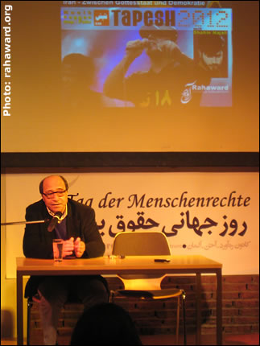

|
|

روز جهانی حقوق بشر
مراسم پرشور روز جهانی حقوق بشر در شهر آخن
کانون ره آورد
جمعه29 آذر 1387
کانون ره آورد که دفاع از آزادی و حقوق بشر را سرلوحه فعاليت های خود قرار داده است، همه ساله ۱۰ دسامبر، روز جهانی حقوق بشر را پاس می دارد. امسال نيز که مصادف با شصتمين سالگرد تصويب اعلاميه جهانی حقوق بشر می باشد، برنامه ويژه ای از طرف کانون تدارک ديده شده بود.
اين برنامه که به زبان آلمانی اجرا شد، روز يکشنبه ۱۴ دسامبر در سالن KHG در شهر آخن برگزار گرديد.
سخنرانی اين برنامه را آقای بهمن نيرومند به عهده داشت و در بخش هنری، گروه «تپش ۲۰۱۲»، با همراهی شاهين نجفی (ترانه سرا و خواننده گروه)، اميد پوريوسفی (سرپرست و خواننده گروه) و «وينا» (خواننده آلمانی گروه)؛ ترانه هايی را اجرا کردند.
در ابتدا مجری جوان اين برنامه، پس از خوشامدگويی، بيانيه کانون ره آورد را به اطلاع حاضرين رسانيد. در اين بيانيه وضعيت حقوق بشر در ايران، طی يک سال گذشته به شکل گزارش تشريح شده بود که متن کامل آن به زبان فارسی در سايت ره آورد منتشر شده است.
(با کليک اينجا بيانيه کانون را بخوانيد)
سخنرانی دکتر بهمن نيرومند
پس از معرفی کوتاه دکتر بهمن نيرومند، وی سخنرانی خود را با عنوان «ايران در ميان حکومت الهی و دمکراسی» آغاز کرد. آقای نيرومند مطرح نمود که برای پرداختن به مسئله ايران بايد ابتدا به تشريح موقعيت منطقه بپردازيم.
بهمن نيرومند ريشه حوادث ۱۱ سپتامبر را در اتفاقات سال های ۱۹۷۰ دانست. از نظر وی، در آن زمان رژيم چپ گرای افغانستان شوروی را به حمايت از خود فراخواند. آمريکا نيز همزمان با وارد شدن ارتش شوروی به افغانستان به حمايت از جبهه مخالف پرداخت. با صرف ميلياردها دلار و با پشتيبانی عربستان سعودی و پاکستان، جبهه مقابله با شوروی و رژيم چپ افغانستان به وجود آمد که در کار خود نيز موفق بود. در همين زمان است که سنگ بنای تروريسم اسلامی به عنوان يک پديده ی بين المللی گذاشته می شود. اين بهايی بود که برای موفقيت آمريکا در مقابل شوروی بايد پرداخت می شد.
دومين حادثه ی مهم، انقلاب اسلامی ايران در سال ۱۹۷۸ بود. انقلابی که رژيم شاه را به عنوان ژاندارم و بازوی آمريکا در منطقه ساقط نمود. اين انقلاب هم چنين با توجه به اهميت منطقه در تامين انرژی از نفت و گاز، تهديد جدی برای غرب تلقی می شد.
سومين حادثه ی مهم از ديدگاه آقای نيرومند، تسليح صدام حسين با مدرن ترين سلاح ها برای جنگ با ايران بود. شايد اين بزرگ ترين اشتباه آمريکايی ها بود زيرا وقوع جنگ تنها به تثبيت هر چه بيش تر جمهوری اسلامی انجاميد. اقدامات و فريادهای آزادی خواهانه در ايران به شديدترين وجه سرکوب گرديد و هزاران نفر تحت عنوان جاسوس و خيانتکار اعدام شده يا به زندان ها افکنده شدند.
در رابطه با مسئله انرژی اتمی، آقای نيرومند عنوان کرد که متاسفانه انتظار نابجای آمريکا و تبعيت کورکورانه اروپا از آن، موضع ايران را بر حق جلوه می دهد. از نظر وی، زمانی که هندوستان، پاکستان، روسيه و اسرائيل دارای تکنيک هسته ای می باشند، چرا نبايد به ايران اجازه استفاده صلح آميز از اين منبع انرژی داده شود؟ وی با توضيح اين که خود، شخصا مخالف تامين انرژی از طريق هسته ای است، مطرح نمود که سياست های غلط غرب در اين رابطه، مستمسکی برای رژيم احمدی نژاد در جهت مشروعيت بخشيدن به پيشبرد اهداف اتمی اين رژيم است.
آقای نيرومند هم چنين با ذکر اين مطلب که اسرائيل دارای ۲۵۰ کلاهک اتمی و تعداد زيادی بمب های خوشه ای است ـ که در مقابله با مردم فلسطين نيز اين بمب های خوشه ای را به کار گرفته است ـ اشاره نمود که عدم مقابله با اين موارد نقض حقوق بشر، خوراک تبليغاتی را برای افراطی گراها و تروريست ها فراهم می آورد.
در قسمت پايانی سخنان خود، آقای نيرومند به تشريح وضعيت اقتصادی و وجود مافياهای اقتصادی در ايران پرداخت و به تشديد وخامت اوضاع اقتصادی در زمان دولت احمدی نژاد اشاره کرد.
بهمن نيرومند سپس از وجود يک جامعه مدنی فعال در ميان شهروندان ايران ياد کرد که در دل جمهوری اسلامی به تلاش مداوم برای بهبود شرايط و دستيابی به حقوق شهروندی خود ادامه می دهد. او گفت سئوال اساسی اين است که با تمام تمهيدات حکومت ايران، بگير و ببندها، سانسور، ترور و... چرا جمهوری اسلامی موفق به برپايی يک حکومت اسلامی در ايران نشده است؟ علت آن را بايد در وجود «جامعه مدنی» در ايران جستجو کرد که به آن ها اجازه نمی دهد جامعه ای مطابق سليقه خود شکل دهند.
وی با اشاره ويژه به جنبش زنان و جوانان در ايران، از غرب خواستار شد که به تقويت و پشتيبانی هر چه بيشتر اين جامعه مدنی بپردازد. از نظر آقای نيرومند، غرب می بايد به جای جدال بر سر انرژی هسته ای، تمام تلاش خود را متوجه نقض حقوق بشر در ايران کند.
در پايان سخنرانی، بهمن نيرومند به سئوالات حاضرين پاسخ گفت.
برنامه گروه «تپش ۲۰۱۲»
پس از تنفس نيم ساعته، بخش هنری برنامه با سخنان اميد پوريوسفی، از گروه موسيقی «تپش ۲۰۱۲» آغاز شد. وی ضمن اظهار شادمانی از حضور بهمن نيرومند اعلام کرد که به هنگام تحصيل اش در يکی از دانشگاه های آلمان، خواندن کتاب های بهمن نيرومند به زبان آلمانی، مرجعی بود برای شناخت بيشتر ايران.
اميد در ادامه به معرفی «تپش ۲۰۱۲» پرداخت و علت نامگذاری اين گروه را اميدواری آن برای برگزاری کنسرت در سال ۲۰۱۲ در ايران اعلام کرد. وی همچنين به توضيح «کمپين صد هزار امضا»ی اين گروه در حمايت از اجرای مفاد اعلاميه حقوق بشر در ايران پرداخت. اميد خبر داد که اين امضاها را در تاريخ ۱۰ دسامبر امسال به پارلمان اروپا ارائه داده و با نمايندگان پارلمان در مورد مسائل ايران به بحث و گفتگو نشسته است. همکاری «تپش ۲۰۱۲» با پارلمان اروپا، در رابطه با مسائل حقوق بشری در ايران، در آينده نيز ادامه خواهد داشت.
پس از اين سخنان کوتاه، «وينا» (خواننده آلمانی گروه) ترانه رپی را که گذری بر تاريخ معاصر ايران بود به زبان آلمانی و در دو قسمت جدا اجرا نمود و سپس به همراه اميد، ترانه های پرشور مشترکی را به اجرا گذاشتند که مورد توجه بسيار حاضرين قرار گرفت.
گروه «تپش ۲۰۱۲» با ترانه های خود به سبک رپ و رگی و با صراحتی بی مانند مضامين اجتماعی و سياسی را عرضه می کنند.
هنرمند ديگر، شاهين نجفی بود. او نيز با اجرای چندين ترانه معروف خود، از جمله «ما مرد نيستيم»، «ما آخر خطيم»، «حاجی» و «بامداد» که ترانه ای برای احمد شاملو بود؛ با نگاهی جسورانه و بی پروا مسائل جامعه ايران را به نقد کشيد و شور و شوق ديگری به مراسم بخشيد.
برنامه شصتمين سالگرد تصويب اعلاميه جهانی حقوق بشر، با رپ ديگری از «تپش ۲۰۱۲» با نام «ترانه خوان در خون» که به ياد فريدون فرخزاد ساخته شده است؛ با همراهی و همخوانی جمعيت حاضر که بپاخاسته بودند، به پايان رسيد.
به تصاويری از اين برنامه توجه کنيد:
